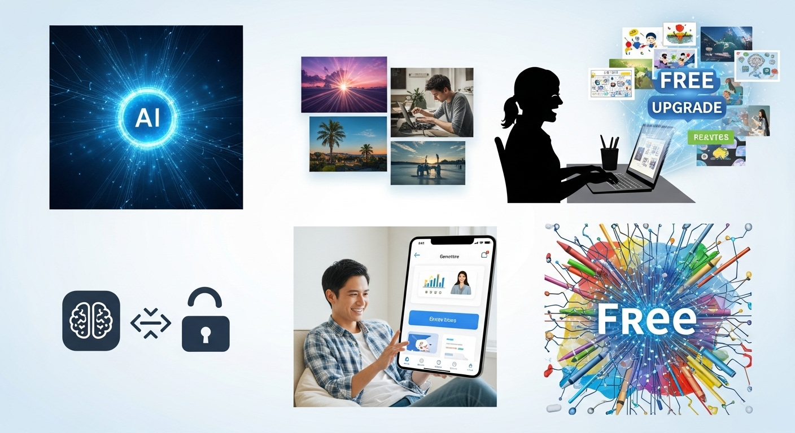
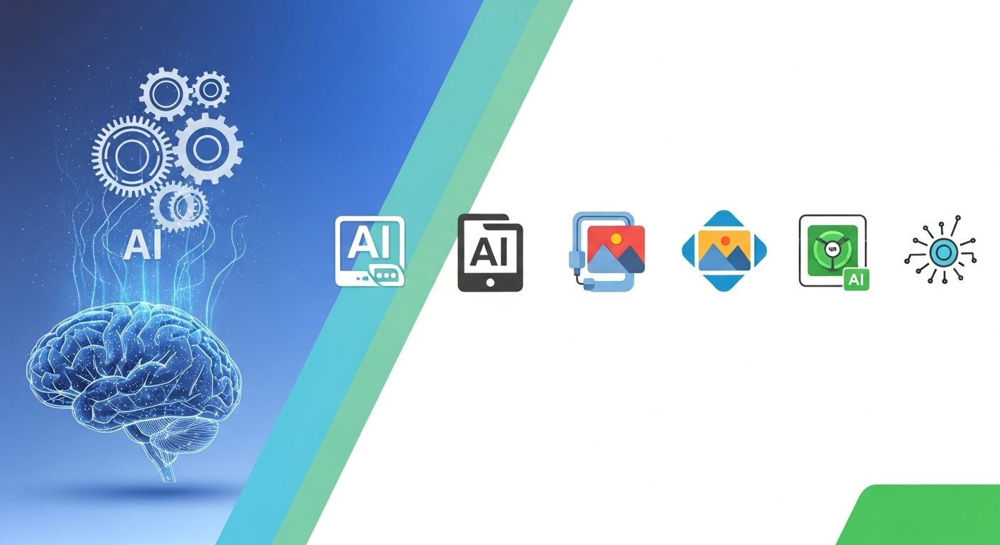

【無料】生成AI画像生成アプリで業務効率UP！プロ並み画像を最短作成
現代のビジネスシーンにおいて、ビジュアルコンテンツの重要性は計り知れません。SNS投稿、ウェブサイトのバナー、プレゼンテーション資料、広告クリエイティブなど、あらゆる場面で魅力的な画像が求められます。しかし、高品質な画像を制作するには、専門的なデザインスキルや高価なソフトウェア、あるいは外部デザイナーへの依頼が必要となり、時間もコストもかさむのが実情でした。
「もっと手軽に、もっとスピーディーに、プロ並みの画像を制作できたら…」
そうお考えの皆様に朗報です。近年急速に進化を遂げている「生成AI画像生成アプリ」が、その悩みを解決する強力なツールとして注目を集めています。特に、無料で利用できるアプリの登場は、中小企業や個人事業主、さらにはコンテンツクリエイターにとって、まさに救世主とも言える存在です。
本記事では、この革新的な生成AI画像生成アプリがどのようなものなのか、なぜ無料で高品質な画像が作れるのか、そして業務においてどのようなメリットとデメリットがあるのかを、優しく丁寧にご紹介します。さらに、無料で利用できるおすすめアプリを厳選して5つご紹介し、皆様の業務効率化とクリエイティブな活動を強力にサポートするための具体的な一歩を提案いたします。
デザインスキルがなくても、予算が限られていても、もう心配はいりません。生成AIの力を借りて、あなたのビジネスを次のステージへと押し上げるプロ並みの画像を、最短で手に入れる方法を一緒に探っていきましょう。
生成AI画像生成アプリとは？無料で業務活用できる理由

近年、私たちの生活やビジネスに大きな変化をもたらしているAI技術。その中でも特に注目を集めているのが「生成AI」です。そして、その生成AIが画像制作の分野に応用されたのが、「生成AI画像生成アプリ」に他なりません。このセ章では、生成AI画像生成アプリの基本的な仕組みから、なぜ無料で高品質な画像が作れるのか、その背景に迫ります。
生成AI画像生成アプリの仕組みと特徴
生成AI画像生成アプリは、一言で言えば「テキスト（言葉）から画像を生成する」ツールです。ユーザーが入力したキーワードや文章（これを「プロンプト」と呼びます）をAIが解釈し、その内容に合致する画像を自動的に生成してくれます。まるで魔法のようにも感じられますが、その裏には高度な技術が隠されています。
AIが画像を生成する基本的な仕組み
この技術の核となっているのは、主に「深層学習（ディープラーニング）」と呼ばれるAIの一分野です。特に、画像生成においては「GAN（敵対的生成ネットワーク）」や、近年主流となっている「Diffusionモデル（拡散モデル）」といった技術が用いられています。
- GAN（Generative Adversarial Networks）： これは、画像を生成する「生成器（Generator）」と、それが本物の画像か偽物かを判定する「識別器（Discriminator）」という2つのAIが互いに競い合いながら学習を進める仕組みです。生成器は識別器を騙せるようなよりリアルな画像を生成しようと努力し、識別器は生成器が作った偽物を見破る能力を高めていきます。この繰り返しによって、非常に高品質でリアルな画像を生成できるようになります。
- Diffusionモデル（拡散モデル）： こちらは、ノイズだらけの画像から段階的にノイズを取り除き、最終的にクリアな画像を生成するというアプローチを取ります。まるで、霧の中から徐々に具体的な形が浮かび上がってくるようなイメージです。このモデルは、GANに比べてより多様で安定した画像を生成できるとされ、現在の主流となっています。DALL-E 3やStable Diffusionといった主要な生成AIモデルの多くが、このDiffusionモデルをベースにしています。
これらのAIモデルは、インターネット上にある膨大な量の画像とそれに付随するテキストデータ（キャプションや説明文など）を学習することで、言葉と視覚的な特徴の関連性を習得します。例えば、「青い空」「白い雲」「猫」といった言葉がどのような画像と結びついているのかを学習し、その知識に基づいて新たな画像を「創造」するのです。
生成AI画像生成アプリの主な特徴
- テキストからの画像生成（Text-to-Image）： 最も基本的な機能であり、ユーザーが入力した文章を基に画像を生成します。
- 多様なスタイルとテーマ： 写実的な写真から、油絵、水彩画、アニメ風、サイバーパンク、ファンタジーなど、幅広いアートスタイルやテーマの画像を生成できます。
- 画像編集・加工機能： 生成した画像をさらに編集したり、既存の画像をAIで加工したりする機能を持つアプリもあります。例えば、画像の特定の部分をAIに描き直させたり（Inpainting）、画像の範囲を広げたり（Outpainting）することが可能です。
- 手軽な操作性： ほとんどのアプリは直感的なインターフェースを備えており、専門知識がなくても簡単に画像を生成できます。
- 高速な生成速度： 多くのアプリが数秒から数十秒で複数の画像を生成します。
- 継続的な進化： AI技術は日々進歩しており、アプリも定期的にアップデートされ、生成される画像の品質や機能が向上しています。
これらの特徴により、生成AI画像生成アプリは、デザイナーではない一般のユーザーでも、まるでプロが作ったかのような高品質な画像を、驚くほどの速さと手軽さで手に入れることを可能にしているのです。
無料アプリでも高クオリティな画像が作れる背景
「無料」と聞くと、「どうせ大したことないだろう」と考える方もいらっしゃるかもしれません。しかし、現在の生成AI画像生成アプリにおいては、無料版でも驚くほど高クオリティな画像を作成できるものが多数存在します。その背景には、いくつかの重要な要因があります。
1. オープンソース文化とコミュニティの貢献
生成AI技術の発展を大きく後押ししているのが、オープンソース（Open Source）の文化です。特に、Stability AIが開発した「Stable Diffusion」は、そのモデル自体がオープンソースとして公開されました。これは、世界中の開発者が自由にその技術を利用し、改良し、新たな派生モデルを開発できることを意味します。
- 技術の民主化： オープンソース化により、一部の巨大企業だけでなく、個人開発者や研究機関も最先端のAI技術にアクセスできるようになりました。
- コミュニティによる改良： 世界中のエンジニアやアーティストがStable Diffusionをベースに、特定のスタイルに特化したモデル（LoRAなど）や、より高品質な画像を生成するための改良版（Checkpointモデル）を開発し、それを共有しています。これにより、モデル全体の性能が底上げされ、多様なニーズに応えられるようになりました。
- 無料のWeb UIの登場： オープンソースモデルを誰でも簡単に利用できるように、Webブラウザ上で動作する無料のインターフェース（Web UI）が多数開発されました。例えば、DreamStudio（Stability AI公式）、Civitai、Hugging Face Spacesなどで、Stable Diffusionを無料で試すことができます。
このようなオープンソースとコミュニティの貢献が、無料でありながらプロフェッショナルレベルの画像生成を可能にしている大きな理由の一つです。
2. 大手企業の参入と競争による技術の加速
Microsoft、Google、Metaといったテクノロジー大手も、生成AIの分野に積極的に参入しています。
- Microsoft Copilot（旧Bing Image Creator）： MicrosoftはOpenAIが開発した最先端のDALL-E 3モデルを自社の検索エンジンBing（現在はCopilotに統合）に組み込み、無料で提供しています。これにより、ユーザーはMicrosoftアカウントがあれば、DALL-E 3の強力な画像生成能力を無料で利用できるようになりました。大手企業が提供するサービスは、安定性やサポート体制も期待できます。
- Googleの取り組み： Googleも画像生成AI「Imagen」などを開発しており、将来的にはより広範な無料サービスへの統合が期待されます。
これらの大手企業が、自社のサービスエコシステムを強化するため、あるいは市場での競争優位性を確立するために、高品質なAI画像生成サービスを無料で提供しているのです。彼らが持つ膨大な計算リソースと研究開発能力が、無料サービスの品質向上に寄与しています。
3. フリーミアムモデルのビジネス戦略
多くの生成AI画像生成アプリは、「フリーミアム」というビジネスモデルを採用しています。これは、「Free（無料）」と「Premium（有料）」を組み合わせた造語で、基本的な機能を無料で提供し、より高度な機能や無制限の利用、高速な処理などを求めるユーザーには有料プランへのアップグレードを促すという戦略です。
- ユーザー獲得と市場拡大： 無料でサービスを提供することで、多くのユーザーに気軽に試してもらい、その魅力を体験してもらうことができます。これにより、市場を拡大し、将来的な有料ユーザーへと繋げる狙いがあります。
- コスト効率の良い提供： AIモデルの推論（画像を生成する処理）には一定の計算リソースが必要ですが、クラウドコンピューティング技術の進化とコストダウンにより、無料枠の提供が可能になっています。無料ユーザーの利用状況を分析することで、サービスの改善にも役立てられます。
- 有料版での収益化： 無料版で機能制限や広告表示を設けることで、ユーザーはより快適な体験を求めて有料プランへ移行するインセンティブが生まれます。この有料版の収益が、さらなる研究開発やサービス維持の原資となります。
このように、オープンソースの普及、大手企業の競争、そしてフリーミアムというビジネスモデルが複合的に作用することで、「無料でもプロ並みの画像が作れる」という、現在の生成AI画像生成アプリの状況が実現しているのです。これは、クリエイティブな活動やビジネスにおける画像制作の常識を大きく変える可能性を秘めています。
無料の生成AI画像生成アプリのメリット
生成AI画像生成アプリが無料で利用できるようになったことは、多くのビジネスパーソンやクリエイターにとって、まさにゲームチェンジャーと言えるでしょう。デザインの専門知識がなくても、予算を気にせず、高品質な画像を迅速に手に入れられるようになったのです。このセクションでは、無料の生成AI画像生成アプリがもたらす具体的なメリットについて、詳しく掘り下げていきます。
メリット１．デザインスキル不要でプロ並みの画像を生成
これまで高品質な画像を制作するには、PhotoshopやIllustratorといった専門的なデザインソフトウェアを使いこなすスキルが必須でした。また、色彩感覚や構図、タイポグラフィなど、デザインに関する深い知識と経験が求められるため、多くの人にとって敷居の高い領域だったと言えるでしょう。しかし、生成AI画像生成アプリは、この常識を根本から覆します。
専門知識や経験がなくても大丈夫
生成AI画像生成アプリの最大の魅力は、デザインスキルや専門知識が一切不要である点です。あなたがする必要があるのは、作りたい画像のイメージを「言葉」でAIに伝えることだけ。例えば、「夕焼けのビーチで犬がボールを追いかけている写真、リアルな描写で」といった具体的な指示（プロンプト）を入力するだけで、AIがそのイメージを瞬時に視覚化し、プロが撮影したかのような美しい画像を生成してくれます。
- 直感的な操作性： 多くのアプリは、テキスト入力欄と生成ボタンが配置されたシンプルなインターフェースを採用しています。複雑なレイヤー操作やフィルター設定、ブラシツールなどを覚える必要はありません。
- 多様な表現が可能： 写実的な写真から、油絵、水彩画、アニメ風、サイバーパンク、ファンタジー、ミニマリズムなど、幅広いアートスタイルに対応しています。プロンプトに「in the style of Van Gogh (ゴッホ風に)」や「pixel art (ピクセルアート)」と加えるだけで、そのスタイルを再現した画像を生成できます。
- アイデアの具現化が容易： 頭の中にある漠然としたイメージを、具体的な形としてアウトプットする作業が格段に速くなります。デザインの専門家でなくても、自分のアイデアを視覚的に表現できるようになるため、コミュニケーションの質の向上にも繋がります。
業務での具体的な活用シーン
デザインスキルが不要であるという特性は、ビジネスの様々な場面で大きなメリットをもたらします。
- マーケティング・広告:
- SNS投稿用の画像: 日々のSNS投稿に合わせた目を引く画像を、投稿内容に合わせてリアルタイムで生成できます。季節のイベント、新商品の紹介、キャンペーン告知など、多様なニーズに対応可能です。
- ウェブサイトのバナー・アイコン: ウェブサイトのデザインに合わせて、統一感のあるバナーやアイコンを迅速に作成できます。A/Bテスト用に複数のバリエーションを生成するのも容易です。
- ブログ記事のアイキャッチ画像: 記事の内容を視覚的に表現するアイキャッチ画像を、記事執筆と並行して作成できます。読者の目を引き、クリック率向上に貢献します。
- 広告クリエイティブ: ターゲット層や広告メッセージに合わせた画像を、広告運用者が直接生成できます。これにより、デザイナーとの連携コストや時間を削減し、PDCAサイクルを高速化できます。
- プレゼンテーション・資料作成:
- スライドの背景・挿絵: プレゼンテーション資料のテーマに合わせた背景画像や、説明を補足する挿絵を簡単に作成できます。視覚的に魅力的な資料は、聞き手の理解を深め、メッセージの伝達効果を高めます。
- 報告書・提案書の図解: 複雑な概念やデータを視覚的に分かりやすく表現するための図やイラストを生成し、説得力のある資料作成に役立てられます。
- コンテンツ制作:
- 動画のサムネイル: YouTubeなどの動画コンテンツのサムネイル画像を、動画の内容に合わせて魅力的に作成できます。視聴者のクリックを促す重要な要素です。
- eBookやガイドブックの表紙・挿絵: オリジナリティあふれる表紙や、内容に沿った挿絵を生成することで、コンテンツの品質と魅力を向上させます。
- 商品開発・企画:
- コンセプトイメージの作成: 新しい商品やサービスのアイデアを視覚的に表現するためのコンセプト画像を生成し、企画段階でのイメージ共有やフィードバックに活用できます。
- モックアップの作成: 商品パッケージやウェブサイトのUIデザインのモックアップを生成し、具体的なイメージを早期に確認できます。
このように、デザインスキルがない人でも、生成AI画像生成アプリを使えば、ビジネスのあらゆる場面で「プロ並み」のビジュアルコンテンツを自力で生み出すことが可能になります。これは、クリエイティブな活動のハードルを劇的に下げ、より多くの人々がアイデアを形にする手助けとなるでしょう。
メリット２．コストを抑えて画像素材を量産できる
ビジネスにおいて、高品質な画像素材は不可欠ですが、その制作には往々にして高いコストがかかります。プロのデザイナーに依頼すれば数万円から数十万円、ストックフォトサイトを利用しても、高品質な素材を継続的に利用すれば年間で数万円以上の費用が発生することもあります。しかし、無料の生成AI画像生成アプリは、このコスト問題を劇的に解決します。
デザイン外注費、ストックフォト費用を大幅削減
無料の生成AI画像生成アプリを活用することで、これまで画像制作にかかっていた様々なコストを大幅に削減することが可能になります。
- デザイナーへの外注費の削減： 専門的なデザインスキルが不要になるため、社内で画像を制作できるようになり、外部のデザイナーや制作会社に依頼する費用を削減できます。特に、頻繁に画像が必要となるマーケティングや広報活動において、この削減効果は非常に大きいです。
- ストックフォトサイトの利用料削減： 多くのストックフォトサイトでは、高品質な画像をダウンロードするためにクレジット購入や月額・年額のサブスクリプション費用が必要です。AIで画像を生成すれば、これらの費用をかけずに、必要な画像を必要な時に手に入れることができます。特に、特定のニッチなテーマや、既存のストックフォトでは見つかりにくいユニークな画像を求めている場合に、AI生成は非常に有効です。
- ソフトウェアライセンス費用の削減： PhotoshopやIllustratorなどのプロ向けデザインソフトウェアは、月額または年額のライセンス費用がかかります。無料の生成AIアプリはブラウザベースで利用できるものが多く、これらの高価なソフトウェアを導入する必要がなくなります。
これらのコスト削減は、特に予算が限られている中小企業やスタートアップ、個人事業主にとって、大きな経営上のメリットとなります。削減できた費用を、他の事業投資やマーケティング活動に回すことで、より効率的な事業運営が可能になります。
バリエーション豊かな画像を短時間で大量に生成
コスト削減だけでなく、生成AI画像生成アプリは「量産性」においても圧倒的な優位性を持っています。手作業で画像を制作する場合、一枚一枚に時間と労力がかかりますが、AIはプロンプト一つで瞬時に複数のバリエーションを生成してくれます。
- 高速な画像生成： 多くのアプリでは、一つのプロンプトに対して数秒から数十秒で4枚程度の画像を生成します。気に入ったものがあればすぐにダウンロードでき、気に入らなければプロンプトを少し変更して再生成する、というサイクルを極めて高速に繰り返せます。
- 無限のバリエーション： 同じプロンプトでも、AIは毎回少し異なる画像を生成します。また、プロンプトのわずかな変更（例：「犬」を「子犬」に変える、「夕焼け」を「朝焼け」に変えるなど）や、スタイル指定の追加によって、無限とも言えるバリエーションの画像を簡単に生み出せます。
- A/Bテストに最適： マーケティングにおいて、どのクリエイティブが最も効果的かを検証するA/Bテストは非常に重要です。AI画像生成アプリを使えば、同じテーマで色合い、構図、被写体の配置などが異なる複数の画像を瞬時に作成し、効果的なテストを迅速に行うことができます。これにより、広告の効果を最大化し、コンバージョン率の向上に貢献します。
- コンテンツの鮮度維持： SNSやブログ、ニュースレターなど、常に新しいビジュアルコンテンツを必要とする媒体において、AIはコンテンツの鮮度を維持する強力な味方となります。イベントやトレンドに合わせて、タイムリーな画像を迅速に提供できるようになります。
- 在庫切れの心配なし： ストックフォトサイトでは、人気の画像は頻繁に利用され、他社との差別化が難しくなることがあります。AIで生成した画像は、あなたが「創造」したオリジナル画像であるため、他社と重複する心配が少なく、ブランディングにも寄与します。
例えば、あるECサイトが新商品を発売する際、従来であれば商品の写真撮影、レタッチ、バナーデザインに数日を要していました。しかし、AI画像生成アプリを使えば、商品の特徴をプロンプトで入力するだけで、数分で数十種類のバナー候補が生成されます。これを活用すれば、発売までのリードタイムを短縮し、市場投入のスピードを上げることが可能になります。
このように、無料の生成AI画像生成アプリは、コストを大幅に抑えながら、ビジネスに必要な高品質な画像素材を「必要な時に、必要なだけ、必要なスタイルで」量産できるという、これまでにない価値を提供します。これは、現代のスピード感あるビジネス環境において、企業や個人が競争力を維持・向上させるための強力な武器となるでしょう。
メリット３．業務効率を大幅に向上させる
ビジネスにおいて時間は最も貴重な資源の一つです。特に、クリエイティブな作業は多くの時間を要しがちで、他の重要な業務を圧迫することもあります。生成AI画像生成アプリは、この時間的な制約を大きく緩和し、業務全体の効率を飛躍的に向上させる可能性を秘めています。
画像制作にかかる時間の大幅な短縮
従来の画像制作プロセスは、以下のようなステップを踏むことが一般的でした。
- 企画・コンセプト決定： どのような画像が必要か、目的、ターゲット、メッセージなどを決定します。
- 素材探し/撮影： ストックフォトサイトから探す、あるいは自社で撮影を行います。
- デザイン・加工： Photoshopなどのツールを使って、トリミング、色調補正、テキスト追加、合成などの加工を行います。
- 修正・承認： 関係者からのフィードバックを受けて修正し、最終的な承認を得ます。
この一連のプロセスは、一枚の画像であっても数時間から数日を要することが珍しくありませんでした。特に、複数のバリエーションが必要な場合や、急な依頼が入った場合は、大きな負担となっていました。
しかし、生成AI画像生成アプリを導入することで、このプロセスは劇的に簡素化され、時間も大幅に短縮されます。
- アイデアから具現化まで数分： 企画段階でアイデアが固まったら、すぐにプロンプトを入力して画像を生成できます。一度で完璧な画像が生成されなくても、プロンプトを微調整しながら数回試行錯誤するだけで、数分後には複数の候補が手元に揃います。
- 修正サイクルの高速化： 「もう少し明るく」「別の角度から」「猫を犬に変えて」といった修正指示も、プロンプトの変更だけで迅速に対応できます。デザイナーに依頼して修正を待つ必要がなく、リアルタイムに近い感覚で画像を調整できます。
- 本来の業務への集中： 画像制作にかかる時間が短縮されることで、マーケターは戦略立案に、コンテンツクリエイターは記事執筆や動画編集に、営業担当者は顧客との商談に、より多くの時間を割けるようになります。これにより、それぞれの専門業務の質が高まり、生産性全体が向上します。
例えば、ブログ記事の執筆において、記事の内容に合わせたアイキャッチ画像を毎回作成するのは時間がかかります。しかし、AIアプリを使えば、記事のテーマをプロンプトにするだけで、瞬時に複数のアイキャッチ候補が生成されます。これにより、記事の公開までのリードタイムが短縮され、より多くの記事を効率的に公開できるようになります。
非デザイナー職の従業員でも画像作成が可能に
デザインスキルが不要であるというメリットは、単にコスト削減や時間短縮に留まらず、組織全体の業務効率と柔軟性を高めることにも繋がります。
- 業務の分散化とボトルネックの解消： 従来、画像制作は特定のデザイナーや広報担当者など、限られたスキルを持つ従業員に集中しがちでした。これにより、その担当者が多忙になると、画像制作がボトルネックとなり、他の業務の進行が滞る原因となっていました。生成AIアプリの導入により、非デザイナー職の従業員（例：営業担当者、人事担当者、企画担当者など）も、それぞれの業務に必要な画像を自ら作成できるようになります。
- 各部署のニーズへの迅速な対応： 各部署が自身のニーズに合わせて画像を生成できるようになるため、デザイナーへの依頼や調整にかかる時間が不要になります。例えば、営業チームが顧客への提案資料に使う特定の製品イメージが必要な場合、すぐにAIで生成し、タイムリーに資料を完成させることができます。
- クリエイティブな発想の促進： 画像制作のハードルが下がることで、より多くの従業員が「こんな画像があったら面白い」「このアイデアをビジュアル化したい」といったクリエイティブな発想を形にできるようになります。これにより、組織全体のイノベーションが促進される可能性もあります。
- トレーニングコストの削減： 専門的なデザインソフトウェアの操作方法を学ぶには、時間と費用がかかります。AI画像生成アプリは直感的に使えるものが多く、特別なトレーニングなしに導入できるため、トレーニングコストも削減できます。
具体的には、人事部が採用活動用のSNS投稿や会社説明会資料に使う画像を、広報部がプレスリリース用のイメージ画像を、営業部が顧客への個別提案資料に合わせた画像を、それぞれ自部署で作成できるようになるイメージです。これにより、デザイナーはより戦略的なデザイン業務やブランディングに集中でき、組織全体の生産性向上に貢献します。
このように、無料の生成AI画像生成アプリは、画像制作にかかる時間を劇的に短縮し、さらに非デザイナー職の従業員が自律的に画像を作成できる環境を整えることで、組織全体の業務効率を飛躍的に向上させる強力なツールとなるのです。これは、現代の多忙なビジネス環境において、企業が競争力を維持し、成長を続ける上で不可欠な要素と言えるでしょう。
無料の生成AI画像生成アプリのデメリット
無料の生成AI画像生成アプリは、その利便性とコストパフォーマンスの高さから、多くの可能性を秘めています。しかし、その一方で、無料版ならではの制約や、AI技術特有のリスクも存在することを理解しておく必要があります。このセクションでは、無料の生成AI画像生成アプリを利用する上で注意すべきデメリットについて、詳しく解説します。これらの点をしっかりと把握することで、トラブルを未然に防ぎ、より安全かつ効果的にアプリを活用できるようになるでしょう。
デメリット１．無料版ならではの機能制限や広告表示
無料の生成AI画像生成アプリは、その多くが「フリーミアム」モデルを採用しています。これは、基本的な機能を無料で提供し、より高度な機能や快適な利用体験を求めるユーザーには有料プランへのアップグレードを促すビジネス戦略です。そのため、無料版にはいくつかの機能制限や、利用上の制約が伴うことが一般的です。
具体的な機能制限の例
- 生成枚数や利用回数の制限：
- 多くの無料アプリでは、1日に生成できる画像の枚数や、月に利用できるクレジット数に制限が設けられています。例えば、「1日15枚まで」「月間100クレジットまで」といった形で、利用が制限されることがあります。ビジネスで大量の画像が必要な場合、この制限は大きな足かせとなる可能性があります。
- 特に、プロンプトを調整しながら試行錯誤を繰り返すクリエイティブな作業では、すぐに制限に達してしまうことも少なくありません。
- 生成画像の解像度や品質の制限：
- 無料版で生成できる画像の解像度が、有料版に比べて低く設定されている場合があります。ウェブサイトやSNSでの利用には十分な解像度であっても、印刷物や高精細なディスプレイでの利用には不向きなケースもあります。
- また、生成される画像の品質（ディテール、リアリティなど）自体が、無料版では有料版の最先端モデルに比べて若干劣る可能性も指摘されます。
- 高度な機能の制限：
- モデル選択の制限： 最新の高性能なAIモデルや、特定のスタイルに特化したモデル（ファインチューニングモデル、LoRAなど）は、有料プラン限定となっていることがあります。
- 画像編集機能の制限： 生成した画像をさらに細かく調整する「Inpainting（部分修正）」や「Outpainting（画像拡張）」、あるいはアップスケーリング（高解像度化）などの高度な編集機能が、無料版では利用できなかったり、回数制限があったりします。
- プロンプト入力のオプション制限： プロンプトの重み付け、ネガティブプロンプト（生成してほしくない要素を指定する機能）の文字数制限など、より詳細な制御を行うためのオプションが制限されていることがあります。
- バッチ生成の制限： 一度に複数のプロンプトで画像を生成する「バッチ生成」機能や、生成履歴の保存期間、フォルダ管理機能などが制限されることもあります。
- 商用利用の可否：
- 最も重要な制限の一つが、商用利用に関する規定です。一部の無料アプリや無料プランでは、生成した画像の商用利用が禁止されていたり、特定の条件（例：クレジット表記の義務、収益が一定額以下の場合のみ許可）が付帯していたりすることがあります。ビジネスで利用する際には、必ず利用規約を詳細に確認する必要があります。
広告表示による利用体験の低下
無料アプリの多くは、アプリ内に広告を表示することで収益を得ています。
- 視覚的な妨げ： 画像生成の画面や結果表示の間に広告が挿入されることがあり、集中を妨げたり、視覚的に邪魔に感じたりすることがあります。
- 操作性の低下： 広告の読み込みによってアプリの動作が一時的に重くなったり、誤って広告をクリックしてしまったりする可能性もあります。
- 時間のロス： 広告が表示されるまでの待ち時間が発生することもあり、業務効率を重視するビジネスシーンにおいては、このわずかな待ち時間も積み重なると大きなロスとなり得ます。
これらの機能制限や広告表示は、無料アプリを最大限に活用しようとする際に、ある種の「壁」として立ちはだかる可能性があります。ビジネスで本格的に活用を検討する際には、無料版でできることとできないことを明確に理解し、必要に応じて有料プランへのアップグレードも視野に入れることが重要です。まずは無料版で試してみて、自身のニーズに合致するかどうかを見極めるのが賢明なアプローチと言えるでしょう。
デメリット２．意図しない画像生成や著作権問題のリスク
生成AI画像生成アプリは非常に強力なツールですが、その特性上、いくつかのリスクも伴います。特に、意図しない画像が生成される可能性や、著作権に関する問題は、ビジネスで利用する上で慎重な検討が必要です。
意図しない（不適切な）画像生成のリスク
AIは、入力されたプロンプトを学習データに基づいて解釈し、画像を生成します。しかし、AIの解釈が常に人間の意図と一致するとは限りません。
- プロンプトの解釈の難しさ：
- 同じプロンプトでも、AIモデルや設定によって生成される画像は異なります。また、プロンプトの書き方一つで、全く意図しない画像が生成されることがあります。例えば、「子供が遊んでいる公園」と入力しても、AIが学習したデータによっては、不審者や危険な遊具が写り込んだような不適切な画像が生成される可能性もゼロではありません。
- 特に、抽象的な概念や複雑な状況を表現するプロンプトは、AIが正確に理解するのが難しい場合があります。
- 意図しない画像が生成された場合、それをそのまま公開してしまうと、企業のブランドイメージを損ねたり、倫理的な問題を引き起こしたりするリスクがあります。
- 倫理的・社会的な問題：
- AIが学習したデータには、時に偏見や差別的な情報が含まれている可能性があります。その結果、特定の民族、性別、職業などに対してステレオタイプな、あるいは差別的な表現を含む画像が生成されるリスクがあります。
- 暴力的な内容、性的表現、ヘイトスピーチに繋がるような不適切な画像が生成される可能性も否定できません。多くのアプリはフィルタリング機能を備えていますが、完璧ではありません。
- ビジネスでこれらの画像を誤って使用してしまえば、炎上や信用失墜といった深刻な事態を招きかねません。生成された画像は必ず内容を精査し、公開前に複数人でチェックする体制を整えることが重要です。
著作権問題に関する懸念
生成AIが生成した画像の著作権に関する問題は、現在も世界中で議論が続いている複雑なテーマです。現時点では明確な法的枠組みが確立されていないため、利用する際には慎重な判断が求められます。
- 学習データの著作権侵害の可能性：
- 生成AIは、インターネット上から収集した膨大な画像データを学習しています。この学習データの中には、著作権で保護された画像が許諾なく含まれている可能性があります。
- AIが生成した画像が、特定の既存の著作物と酷似していた場合、たとえ意図せずとも著作権侵害と見なされるリスクがあります。特に、特定の画風やキャラクターを模倣するようなプロンプトを使用する際には、注意が必要です。
- 一部のアーティストや著作権者は、AIによる学習データの利用に対して異議を唱えており、訴訟に発展するケースも出てきています。
- 生成画像の著作権帰属の不明確さ：
- AIが生成した画像は、誰の著作物と見なされるのか、という点も議論の対象です。プロンプトを入力した人間が著作者となるのか、AIの開発元が著作者となるのか、あるいは著作物として認められないのか、国や法域によって見解が分かれています。
- 現在の日本の著作権法では、「思想又は感情を創作的に表現したもの」が著作物と定義されており、AI単独で生成した画像は、原則として著作物とは認められにくいと解釈されています。ただし、人間がプロンプトの選定や修正、生成画像の加工などを通じて「創作的寄与」を行った場合は、その人間が著作者となる可能性もあります。
- ビジネスで生成AI画像を利用する場合、その画像の著作権が明確でないと、将来的に法的なトラブルに巻き込まれるリスクがあります。特に商用利用を考えている場合は、慎重な検討が必要です。
- 商用利用時のライセンスと利用規約の確認：
- 各生成AI画像生成アプリ（特に無料版）は、それぞれ独自の利用規約やライセンスポリシーを定めています。商用利用の可否、クレジット表記の義務、禁止事項などが明記されているので、必ず利用前に確認することが不可欠です。
- 多くの無料版では商用利用が制限されているか、特定の条件が課せられていることが多いです。これらの規約に違反した場合、訴訟やアカウント停止などのリスクがあります。
- 特に、オープンソース系のAIモデル（Stable Diffusionなど）をベースにしたアプリを利用する場合、そのモデル自体のライセンス（例：Creative ML OpenRAIL-M License）にも従う必要があります。これは、生成された画像の利用範囲や条件を規定するものです。
これらのリスクを最小限に抑えるためには、生成された画像を公開前に必ず人間の目で厳しくチェックし、不適切な表現や既存の著作物との類似性がないかを確認することが重要です。また、利用するアプリの利用規約やライセンスポリシーを熟読し、不明な点があれば法務部門や専門家に相談するなど、慎重な姿勢で臨むことが求められます。現状では、生成AI画像の利用には「自己責任」の側面が強く、法的な動向を常に注視していく必要があるでしょう。
デメリット３．セキュリティとプライバシーに関する懸念
生成AI画像生成アプリ、特にクラウドベースのサービスを利用する際には、セキュリティとプライバシーに関する懸念も考慮に入れる必要があります。ビジネスで利用する場合、企業の機密情報や顧客データに関わるリスクを理解し、適切な対策を講じることが不可欠です。
入力情報のデータ管理とプライバシー
生成AI画像生成アプリは、ユーザーが入力したプロンプト（テキスト情報）や、アップロードした画像データを処理して画像を生成します。この入力データがどのように扱われるか、プライバシー保護の観点から注意が必要です。
- プロンプト情報の利用：
- 多くのAIサービス提供元は、ユーザーが入力したプロンプトデータを、AIモデルの改善やサービス向上のために利用する場合があります。これは、利用規約に明記されていることがほとんどです。
- もしプロンプトに企業秘密、未公開の商品情報、顧客の個人情報、あるいは競合他社の情報など、機密性の高い内容を含めてしまった場合、その情報がAIモデルの学習データとして利用されたり、第三者に漏洩したりするリスクがゼロではありません。
- 例えば、「弊社の新商品『〇〇』のロゴデザインを、未来的なスタイルで」といったプロンプトを入力した場合、その「新商品〇〇」の情報がAIを通じて外部に流出する可能性も考えられます（直接的な漏洩でなくても、AIの学習データに含まれることで、他のユーザーの生成結果に影響を与える可能性）。
- そのため、機密性の高い情報はプロンプトとして入力しない、あるいは抽象的な表現に留めるなどの配慮が必要です。
- 生成画像のデータ管理：
- 生成された画像データが、サービス提供元のサーバーにどのくらいの期間保存されるのか、誰がアクセスできるのか、どのように利用されるのかも重要なポイントです。
- 特に、生成された画像が企業のブランディングやマーケティング戦略に関わるものである場合、その画像データが外部に流出したり、意図せず他者に利用されたりすることは避けたい事態です。
- 多くのサービスでは、生成履歴が保存され、他のユーザーが閲覧できる「公開ギャラリー」のような機能を持つものもあります。企業で利用する場合は、このような公開設定をオフにする、あるいは非公開設定を徹底することが求められます。
- 個人情報保護とGDPR/CCPAへの対応：
- もし、アップロードする画像に個人の顔写真や識別可能な情報が含まれる場合、個人情報保護法やGDPR（一般データ保護規則）、CCPA（カリフォルニア州消費者プライバシー法）などの規制に抵触するリスクがあります。
- 特に、顧客や従業員の写真を加工して利用する際には、必ず本人の同意を得る必要があります。AIによって加工された画像が、元の個人情報と紐付けられて利用される可能性も考慮しなければなりません。
クラウドサービス利用時のセキュリティリスク
生成AI画像生成アプリの多くは、クラウド上で提供されています。クラウドサービスの利用には、一般的なセキュリティリスクが伴います。
- アカウント乗っ取りのリスク：
- ユーザーのアカウント情報（ID、パスワード）が漏洩した場合、第三者にアカウントを乗っ取られ、不正に画像が生成されたり、保存されているデータにアクセスされたりする可能性があります。
- 強固なパスワードの設定や、二段階認証（2FA）の利用など、基本的なセキュリティ対策を徹底することが重要です。
- サービス提供元のデータ漏洩：
- サービス提供元のシステムにサイバー攻撃があり、サーバーに保存されているユーザーデータ（プロンプト、生成画像、個人情報など）が漏洩するリスクも考慮しなければなりません。
- 信頼できる大手企業が提供するサービスであっても、完全にリスクがないわけではありません。サービスを選ぶ際には、その企業のセキュリティ対策やプライバシーポリシーを事前に確認することが望ましいです。
- マルウェアやフィッシング詐欺：
- 無料アプリの中には、悪意のあるソフトウェア（マルウェア）が仕込まれていたり、フィッシング詐欺の温床となったりするものも存在します。特に、知名度の低いアプリや、公式ストア以外からダウンロードする際には細心の注意が必要です。
- 常に最新のセキュリティソフトを導入し、不審なリンクやダウンロードには近づかないようにしましょう。
企業が導入する際のガイドライン策定の必要性
これらのセキュリティとプライバシーに関する懸念を踏まえ、企業が生成AI画像生成アプリを業務に導入する際には、以下のガイドライン策定を検討することが推奨されます。
- 利用するアプリの選定基準： 信頼性、セキュリティ対策、プライバシーポリシー、商用利用の可否などを明確にする。
- プロンプト入力に関するルール： 機密情報や個人情報を含まないように、具体的なプロンプト作成のガイドラインを設ける。
- 生成画像の利用と公開に関するルール： 不適切な画像や著作権侵害のリスクがある画像を公開しないためのチェック体制を確立する。商用利用の可否を明確にし、必要に応じて法務部門に相談する。
- アカウント管理とセキュリティ対策： 強固なパスワード設定、二段階認証の義務付け、定期的なパスワード変更などを徹底する。
- 従業員への教育： AIツールの利用に関するリスクとガイドラインについて、全従業員に周知徹底する。
無料の生成AI画像生成アプリは、その利便性の高さから業務効率化に大きく貢献しますが、セキュリティとプライバシーのリスクを十分に理解し、適切な対策を講じることで、そのメリットを最大限に享受し、デメリットを最小限に抑えることができるでしょう。
無料の生成AI画像生成アプリおすすめ5選

ここまで、生成AI画像生成アプリの仕組みやメリット・デメリットについて詳しく見てきました。その魅力と注意点を理解した上で、いよいよ具体的なアプリ選びに入りましょう。ここでは、無料で利用できる、業務活用におすすめの生成AI画像生成アプリを厳選して5つご紹介します。それぞれのアプリが持つ特徴や強みを把握し、ご自身のニーズに合ったものを見つけて、ぜひ業務効率化の一歩を踏み出してみてください。
アプリ１．Bing Image Creator (Microsoft Copilot)
概要と特徴
「Bing Image Creator」は、Microsoftが提供する画像生成AIツールで、現在は同社のAIアシスタント「Microsoft Copilot」に統合されています。最大の特徴は、OpenAIが開発した最新かつ高性能な画像生成モデル「DALL-E 3」を無料で利用できる点です。DALL-E 3は、プロンプトの理解度が高く、より自然で意図に沿った画像を生成する能力に優れています。
- DALL-E 3の搭載： 最新のDALL-E 3モデルを無料で利用できるため、非常に高いクオリティの画像を生成できます。プロンプトに忠実な画像を生成する能力が特に優れています。
- 自然言語でのプロンプト入力のしやすさ： 複雑なAI特有のプロンプト記述ルールに詳しくなくても、日常会話のような自然な日本語で指示を出すだけで、イメージに近い画像を生成してくれます。
- Microsoftアカウントとの連携： Microsoftアカウントがあればすぐに利用開始できます。利用状況や履歴がアカウントに紐付けられ、管理しやすいのも特徴です。
- ブースト（クレジット）システム： 無料で利用できる「ブースト」というクレジットがあり、これを消費して画像を生成します。ブーストがなくなっても、生成速度は遅くなりますが、引き続き無料で画像生成が可能です。
- ウェブブラウザ上で完結： 専用ソフトウェアのインストールは不要で、ウェブブラウザから手軽に利用できます。
強みと業務での活用例
- プロンプトの理解度が高く、意図に沿った画像生成：
- DALL-E 3の強みは、複雑な指示や複数の要素を組み合わせたプロンプトでも、その意図を正確に汲み取ってくれる点です。例えば、「青い空の下、白い雲が浮かぶ牧草地で、赤い帽子をかぶった子供が羊と遊んでいる様子を、水彩画のようなタッチで」といった具体的な指示にも、高い精度で応えてくれます。
- 活用例： ブログ記事の挿絵、SNS投稿のアイキャッチ画像、プレゼンテーション資料の図版など、具体的なイメージを正確に視覚化したい場合に最適です。特に、細かい指示を反映させたい場合に、他のモデルよりも少ない試行回数で目的の画像にたどり着ける可能性が高いでしょう。
- 日本語での指示に強く、手軽に利用できる：
- 英語でのプロンプト入力が苦手な方でも、Copilotの日本語入力インターフェースを通じて、自然な日本語で指示を出すことができます。AIが自動で英語に翻訳してくれるため、言語の壁を感じずに利用できます。
- 活用例： 英語でのプロンプト作成に抵抗がある初心者や、多忙で時間をかけられないビジネスパーソンが、手軽に高品質な画像を生成したい場合に非常に便利です。マーケティング担当者が、キャンペーン告知用の画像をスピーディーに作成する際などにも役立ちます。
- Microsoftエコシステムとの連携：
- Microsoft Copilotを通じて利用するため、将来的にはWordやPowerPointなどのMicrosoft Office製品との連携がさらに強化される可能性があります。
- 活用例： プレゼンテーション資料作成時にCopilot上で画像を生成し、そのままPowerPointに挿入するといったシームレスなワークフローが期待できます。これにより、資料作成全体の効率が向上します。
利用上の注意点
- ブーストの消費： 高速生成にはブーストが必要であり、ブーストがなくなると生成速度が低下します。業務で大量かつ迅速な生成が必要な場合は、計画的に利用するか、有料プラン（Microsoft Copilot Proなど）の検討も視野に入れる必要があります。
- 商用利用の可否： Microsoftの利用規約（特に「Microsoft Services Agreement」および「Microsoft Designer の利用規約」）を必ず確認してください。一般的に、個人利用の範囲内での生成は問題ありませんが、ビジネスでの商用利用については、常に最新の規約を確認し、不明な場合は法務部門に相談することをおすすめします。多くの場合、Microsoft Copilot Proなどの有料版では商用利用がより明確に許可されています。
- 生成履歴の管理： 生成された画像はMicrosoftアカウントに紐付けられて保存されますが、公開設定などプライバシーに関する設定を確認し、機密情報を含む画像を不用意に公開しないよう注意が必要です。
Bing Image Creator（Microsoft Copilot）は、その手軽さとDALL-E 3の高い生成能力により、AI画像生成の初心者から、日常的に画像を必要とするビジネスパーソンまで、幅広いユーザーにおすすめできる無料アプリです。
アプリ２．Stable Diffusion Online (DreamStudioなど)
概要と特徴
「Stable Diffusion」は、Stability AIが開発したオープンソースの画像生成AIモデルです。その最大の強みは、そのモデル自体がオープンソースとして公開されているため、世界中の開発者やアーティストによって改良され、多様な派生モデルやツールが生まれている点にあります。
「Stable Diffusion Online」とは、Stable Diffusionモデルを手軽にWebブラウザ上で利用できるサービスの総称です。その代表格が、Stability AI公式が提供する「DreamStudio」です。他にも、Hugging Face SpacesやCivitaiなどで、様々なStable Diffusionベースのモデルを無料で試すことができます。
- オープンソースの力： Stable Diffusionはオープンソースであるため、非常に多くのカスタムモデル（Checkpointモデル、LoRAなど）が存在し、特定のスタイルやテーマに特化した高品質な画像を生成できます。
- 高いカスタマイズ性： プロンプトだけでなく、ネガティブプロンプト、サンプリングメソッド、CFGスケール、シード値、ステップ数など、詳細なパラメータ設定が可能です。これにより、生成される画像を細かく制御できます。
- 多様なWeb UI： DreamStudio以外にも、様々な無料のWebインターフェースが存在し、それぞれ異なる機能や使いやすさを提供しています。
- 無料クレジットシステム： DreamStudioでは、新規登録時に無料クレジットが付与され、それを消費して画像を生成します。クレジットがなくなると、有料での追加購入が必要になりますが、多くのカスタムモデルはHugging Faceなどのプラットフォームで無料で利用可能です。
強みと業務での活用例
- 圧倒的なカスタマイズ性と多様な表現力：
- Stable Diffusionの最大の強みは、そのカスタマイズ性の高さと、それに伴う表現の幅広さです。特定のアーティストの画風を模倣したり、アニメ、イラスト、写真、3Dレンダリングなど、非常に多様なスタイルに対応できます。
- 活用例： ゲーム開発におけるキャラクターデザインや背景アセット、漫画やイラストのアイデア出し、特定のブランドイメージに合わせたアートワーク制作など、高い芸術性や独自性が求められるクリエイティブな業務に最適です。例えば、特定のキャラクターの様々な表情やポーズを生成したり、異なる衣装を着せたバリエーションを作成したりするのに役立ちます。
- 活発なコミュニティと豊富な学習リソース：
- オープンソースであるため、世界中に熱心なユーザーコミュニティが存在します。プロンプトの共有サイト（Civitai, Lexicaなど）や、技術的なフォーラム、チュートリアル動画などが豊富にあり、学習リソースに事欠きません。
- 活用例： AI画像生成の技術を深く学びたい方や、特定の表現を実現するためのプロンプトのヒントを探している方にとって、非常に有益です。コミュニティで共有されている高品質なプロンプトやモデルを利用することで、初心者でもプロレベルの画像を生成できる可能性が高まります。
- 商用利用の柔軟性（ライセンスによる）：
- Stable Diffusionモデル自体は、Creative ML OpenRAIL-M Licenseというライセンスに基づいて提供されています。これは、原則として商用利用を許可していますが、特定の禁止事項（ヘイトスピーチ、差別的なコンテンツの生成など）が存在します。
- 活用例： 商用利用を前提としたコンテンツ制作（広告、商品パッケージ、ウェブサイト素材など）において、ライセンスを理解した上で利用すれば、費用をかけずに高品質な素材を調達できます。ただし、利用するWeb UIやカスタムモデルによっては、個別のライセンス規約がある場合があるので、必ず確認が必要です。
利用上の注意点
- プロンプトエンジニアリングの学習曲線： 高いカスタマイズ性を活かすには、効果的なプロンプトの書き方や、各種パラメータの意味を理解する必要があります。初心者にとっては、学習にやや時間がかかるかもしれません。
- クレジットの消費： DreamStudioなどの公式サービスでは、無料クレジットを消費します。頻繁に利用するとクレジットが不足し、有料での追加購入が必要になる場合があります。他の無料Web UIを探すか、自身のPC環境でローカル環境を構築することも選択肢になりますが、後者は技術的な知識が必要です。
- 著作権と倫理： オープンソースであるゆえに、生成される画像の著作権帰属や、学習データに含まれる著作物の問題、不適切な画像の生成リスクについては、特に注意が必要です。利用規約やライセンスを熟読し、倫理的な利用を心がけることが重要です。
Stable Diffusion Online（特にDreamStudio）は、AI画像生成に慣れてきた方や、より高度な表現やカスタマイズ性を求める方にとって、非常に強力なツールとなるでしょう。その無限の可能性を探求し、独自のクリエイティブな表現を追求したい方におすすめです。
アプリ３．Leonardo.Ai
概要と特徴
「Leonardo.Ai」は、特にゲームアセットやアートワーク、リアルな写真生成に強みを持つ生成AI画像生成プラットフォームです。Stable Diffusionをベースにしながらも、独自のファインチューニングモデルや、ユーザーフレンドリーなインターフェース、豊富な機能を提供しており、プロのクリエイターから初心者まで幅広い層に支持されています。
- 豊富なオリジナルモデル： Stable Diffusionだけでなく、Leonardo.Aiが独自にファインチューニングした「Leonardo Diffusion」「Leonardo Creative」といった高性能なモデルを提供しています。これにより、特定のスタイル（例：写実的な写真、ファンタジーアート、アニメ風など）に特化した高品質な画像を生成できます。
- 直感的なUIと強力な機能： 画像生成だけでなく、Inpainting（画像の部分修正）、Outpainting（画像拡張）、Image-to-Image（画像から画像を生成）、Prompt Magic（プロンプトの解釈を強化する機能）など、多様な編集・加工機能を備えています。
- 無料クレジットシステム： 毎日一定量の無料クレジットが付与され、これを消費して画像を生成します。クレジットは時間で回復するため、継続的に無料で利用できます。
- コミュニティとギャラリー： ユーザーが生成した画像を共有するギャラリー機能が充実しており、他のユーザーのプロンプトや設定を参考にしたり、インスピレーションを得たりすることができます。
強みと業務での活用例
- ゲームアセット・アートワーク制作に特化：
- Leonardo.Aiは、特にファンタジーやSFといったジャンルのゲームアセット（キャラクター、背景、アイテムなど）や、コンセプトアートの生成に非常に優れています。独自のモデルが、これらの分野で高い品質を発揮します。
- 活用例： ゲーム開発会社やインディーゲーム開発者が、初期のコンセプトアート作成、キャラクターデザインのバリエーション検討、背景や環境アセットのアイデア出しに活用できます。アニメーターやイラストレーターが、作品のインスピレーションを得たり、制作プロセスの効率化を図ったりするのにも役立ちます。
- 高品質な写真のようなリアルな画像生成：
- 「Leonardo Diffusion」や「PhotoReal」といったモデルは、非常にリアルで高品質な写真のような画像を生成する能力に長けています。光の表現、質感、肌のディテールなど、細部にまでこだわった画像を生成できます。
- 活用例： ECサイトの商品イメージ、広告クリエイティブ、ウェブサイトのヒーローイメージなど、プロが撮影したかのようなリアルな写真が必要な場合に最適です。特定のシーンや商品をシミュレーションする際に、写真撮影の手間とコストを大幅に削減できます。
- 高度な編集・加工機能による柔軟なワークフロー：
- Inpainting機能を使えば、生成した画像の特定の部分（例：キャラクターの服装、背景のオブジェクトなど）だけをAIに修正させることができます。Outpainting機能を使えば、生成された画像のキャンバスを広げ、AIに続きを描かせることが可能です。
- 活用例： 生成した画像をより完璧に近づけたい場合や、既存の画像の一部を変更・拡張したい場合に非常に便利です。例えば、広告バナーに生成した画像を使い、後から特定の要素だけを修正したいといったニーズに応えられます。これにより、デザイン作業の柔軟性が高まり、効率的なワークフローを構築できます。
利用上の注意点
- クレジットの消費： 毎日付与される無料クレジットには上限があります。高解像度画像や複雑な生成、高度な編集機能を利用すると、クレジットの消費が早くなります。頻繁に利用する場合は、クレジット回復を待つか、有料プランへのアップグレードを検討する必要があります。
- 学習曲線： 豊富な機能とモデルがあるため、使いこなすにはある程度の学習時間が必要です。特に、各モデルの特徴やパラメータ設定を理解することで、より高品質な画像を生成できるようになります。
- 商用利用の規約： Leonardo.Aiの利用規約（特に無料プラン）を必ず確認してください。商用利用に関する条件や、生成物の著作権帰属について明記されています。一般的に、無料プランでも商用利用は可能とされていますが、常に最新の情報を確認することが重要です。
Leonardo.Aiは、特にビジュアルコンテンツの品質にこだわりたい方、ゲームやアートワーク制作に携わる方、そして高度なAI画像生成機能を駆使してクリエイティブな表現を追求したい方におすすめのアプリです。その多機能性と高品質な生成能力は、あなたのクリエイティブな可能性を大きく広げてくれるでしょう。
アプリ４．Canva Magic Media
概要と特徴
「Canva Magic Media」は、世界中で人気のオンラインデザインツール「Canva」に搭載されたAI画像生成機能です。Canvaの既存の強力なデザイン機能とシームレスに連携している点が最大の特徴で、AIで生成した画像をそのままデザインプロジェクトに組み込むことができます。デザイン初心者でも直感的に使えるインターフェースと、Canvaが提供する豊富なテンプレートや素材との組み合わせにより、短時間でプロフェッショナルなビジュアルコンテンツを作成できます。
- Canvaとのシームレスな統合： AIで生成した画像を、Canvaのデザインエディタに直接挿入し、テキストやグラフィック、テンプレートと組み合わせて、さらに洗練されたコンテンツを作成できます。
- 直感的な操作性： Canvaの使いやすいUIを継承しており、プロンプトを入力するだけで簡単に画像を生成できます。AI画像生成が初めての方でも迷うことなく利用開始できます。
- 多様なスタイルオプション： 写真、イラスト、コンセプトアート、水彩画、3Dレンダリングなど、さまざまなアートスタイルを選択して画像を生成できます。
- 無料利用枠： Canvaの無料プランでもMagic Mediaの機能を利用できますが、月間の生成回数に制限があります。Canva Proなどの有料プランにアップグレードすると、より多くの画像を生成できるようになります。
強みと業務での活用例
- デザインツールと連携したオールインワンのコンテンツ制作：
- Magic Mediaの最大の強みは、AI画像生成からデザイン編集、そして最終的なアウトプットまでをCanva内で一貫して行える点です。生成した画像を、Canvaのテンプレートやフォント、グラフィック素材と組み合わせて、数分でプロ並みのバナー、ポスター、SNS投稿などを完成させることができます。
- 活用例： マーケティング担当者やSNS運用者が、キャンペーン用のビジュアルや日々の投稿コンテンツを迅速に作成するのに最適です。例えば、AIで生成した魅力的な背景画像に、Canvaでブランドロゴやキャッチコピーを追加し、SNS投稿用のテンプレートに落とし込む、といった一連の作業を効率的に行えます。
- デザイン初心者でもプロ並みの成果物を作成可能：
- Canva自体がデザインスキルがない人でも簡単に使えるように設計されているため、Magic Mediaも同様に、デザインの専門知識がなくても高品質な画像を生成し、それを活用したデザインを作成できます。
- 活用例： 中小企業の経営者や個人事業主が、自社のウェブサイトやブログ、名刺、プレゼンテーション資料などに使う画像を、外部に依頼することなく自力で作成できます。デザイン外注コストを削減しつつ、ブランドイメージを統一したプロフェッショナルなビジュアルコンテンツを継続的に提供できるようになります。
- 豊富なテンプレートと素材との組み合わせ：
- Canvaが提供する数百万点に及ぶ写真、イラスト、アイコン、フォントなどの素材や、あらゆる用途に対応したテンプレートと、AI生成画像を組み合わせることで、表現の幅が無限に広がります。
- 活用例： 既存のストックフォトでは見つからなかった特定のイメージをAIで生成し、それをCanvaのテンプレートに組み合わせて、オリジナリティあふれるイベント告知ポスターや、商品紹介フライヤーを作成できます。複数のAI生成画像を組み合わせて、コラージュアートを作成することも可能です。
利用上の注意点
- 無料版の制限： Canvaの無料プランでは、Magic Mediaの月間生成回数に制限があります。頻繁に利用したり、大量の画像を生成したりする場合は、すぐに制限に達してしまう可能性があります。その場合は、Canva Proなどの有料プランへのアップグレードを検討する必要があります。
- プロンプトの調整： Canva Magic Mediaのプロンプト理解度は高いですが、より具体的なイメージを生成するには、プロンプトの調整や試行錯誤が必要です。他のAI画像生成ツールと同様に、プロンプトエンジニアリングのスキルを磨くことで、より精度の高い画像を生成できるようになります。
- 商用利用の規約： Canvaの利用規約およびMagic Mediaの規約を必ず確認してください。Canvaで作成したデザインの商用利用は原則可能ですが、AI生成画像に関する特定の条件や、著作権帰属の解釈については、常に最新の情報を確認し、不明な場合は法務部門に相談することをおすすめします。
Canva Magic Mediaは、AI画像生成機能と強力なデザインツールを一体的に利用したい方、特にデザイン初心者や、スピーディーにビジネスコンテンツを作成したい方に最適な選択肢です。オールインワンのソリューションとして、あなたのビジュアルコンテンツ制作を強力にサポートしてくれるでしょう。
アプリ５．Playground AI
概要と特徴
「Playground AI」は、高性能な画像生成AIモデルであるStable DiffusionやDALL-E 3（有料プラン）をベースに、非常に多機能でカスタマイズ性の高い画像生成体験を無料で提供しているプラットフォームです。その最大の特徴は、無料ユーザーに対する利用制限が比較的緩やかであり、一日あたり生成できる画像の枚数が非常に多い点にあります。
- 無料利用枠が非常に広い： 毎日最大1,000枚（Stable Diffusionモデル利用時）の画像を無料で生成できます。これは他の多くの無料アプリと比較しても圧倒的な枚数であり、試行錯誤を繰り返しながら大量の画像を生成したいユーザーにとって大きな魅力です。
- 複数のAIモデルに対応： Stable Diffusionの様々なバージョン（SDXL、SD 1.5など）が利用でき、有料プランではDALL-E 3も選択可能です。これにより、生成したい画像のスタイルや品質に合わせて最適なモデルを選べます。
- 豊富なカスタマイズオプション： プロンプト入力はもちろんのこと、ネガティブプロンプト、画像サイズ、品質と詳細（Quality & Details）、シード値、サンプラー、CFGスケールなど、Stable Diffusionの詳細なパラメータを直感的なインターフェースで設定できます。
- 画像編集機能の充実： Inpainting（部分修正）、Outpainting（画像拡張）、Image-to-Image（画像からの画像生成）、Reference Image（参照画像を用いた生成）といった強力な編集・加工機能を備えています。
- コミュニティとギャラリー： 他のユーザーが生成した画像を閲覧できるギャラリーがあり、プロンプトや設定を参考にすることで、アイデアや技術を学ぶことができます。
強みと業務での活用例
- 圧倒的な無料生成枚数で試行錯誤が容易：
- 1日1,000枚という生成枚数は、プロンプトを少しずつ変更しながら理想の画像を追求する試行錯誤のプロセスにおいて、非常に大きなメリットとなります。生成回数を気にすることなく、様々なプロンプトや設定を試すことができます。
- 活用例： マーケティング担当者がA/Bテスト用に数十種類の広告クリエイティブのバリエーションを検討したい場合や、コンテンツクリエイターがブログ記事やSNS投稿のアイキャッチ画像を大量に生成して最適なものを選びたい場合に最適です。アイデア出しの段階で、様々なコンセプトを視覚化するのにも役立ちます。
- 高度なカスタマイズ性と多機能な編集ツール：
- Stable Diffusionの詳細なパラメータにアクセスできるため、生成される画像の品質、スタイル、構図などを細かく制御できます。また、InpaintingやOutpaintingといった編集機能を使えば、生成した画像をさらに完璧なものに近づけることができます。
- 活用例： デザイナーやアーティストが、特定のコンセプトやスタイルに合わせた画像をゼロから生成し、さらに細部の調整や修正を加えたい場合に強力なツールとなります。例えば、生成したキャラクターの服装だけを変更したり、背景の不足部分をAIに描き足させたりすることで、より完成度の高いビジュアルコンテンツを制作できます。
- 初心者から上級者まで対応可能な柔軟性：
- 基本的なプロンプト入力だけでも高品質な画像を生成できますが、詳細なパラメータ設定を学ぶことで、より専門的なニーズにも応えられます。直感的なUIでありながら、深いカスタマイズ性を持つため、ユーザーのスキルレベルに合わせて利用できます。
- 活用例： AI画像生成を始めたばかりの人が、まずは手軽に画像を生成する体験から始め、徐々にプロンプトエンジニアリングやパラメータ設定のスキルを習得していくのに適しています。また、Stable Diffusionのローカル環境構築が難しいが、そのカスタマイズ性をWeb上で活用したい上級者にもおすすめです。
利用上の注意点
- DALL-E 3は有料プラン限定： 無料プランではStable Diffusionモデルが利用できますが、DALL-E 3の利用は有料プラン（Proプラン）限定となります。DALL-E 3のプロンプト理解度の高さを求める場合は、有料プランの検討が必要です。
- 商用利用の規約： Playground AIの利用規約（特に無料プラン）を必ず確認してください。生成された画像の商用利用は原則可能とされていますが、Stability AIのライセンス（Creative ML OpenRAIL-M License）にも準拠する必要があります。常に最新の情報を確認し、不明な場合は法務部門に相談することをおすすめします。
- 学習曲線： 豊富な機能とカスタマイズオプションがあるため、それらを最大限に活用するには、ある程度の学習と試行錯誤が必要です。しかし、その学習は高品質な画像を生成するための投資となるでしょう。
Playground AIは、無料で大量の画像を生成しながら、高度なカスタマイズ性や編集機能を活用したいユーザーにとって、非常に魅力的な選択肢です。特に、マーケティング、コンテンツ制作、デザイン分野で、試行錯誤を重ねながら高品質なビジュアルコンテンツを効率的に制作したい方におすすめのアプリと言えるでしょう。
この記事は、現時点での情報に基づいて作成されています。生成AI技術や各サービスの利用規約、料金体系、機能などは日々変化する可能性があります。最新の情報は、各サービスの公式サイトや利用規約を必ずご確認ください。